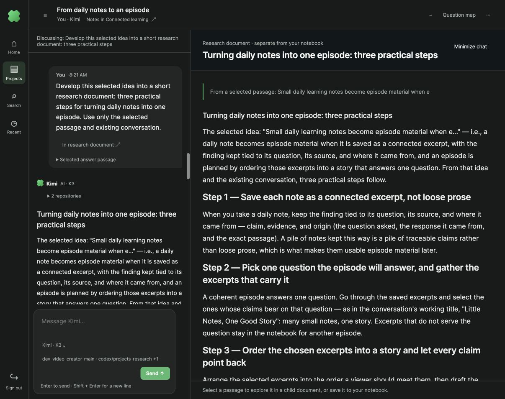
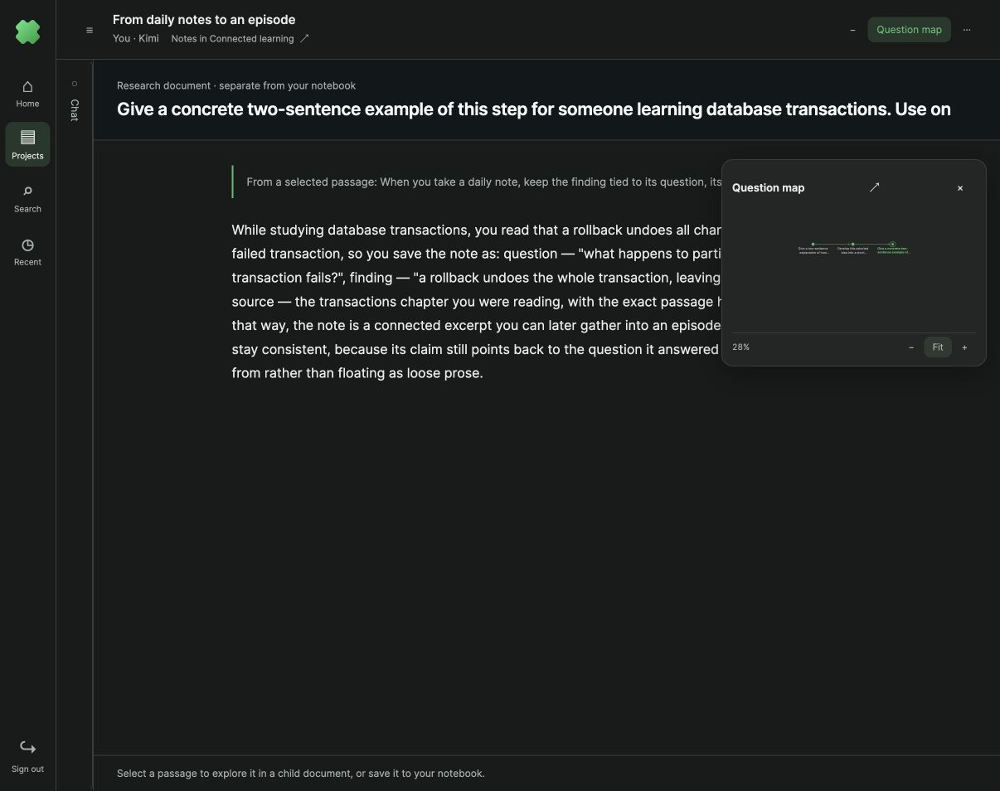
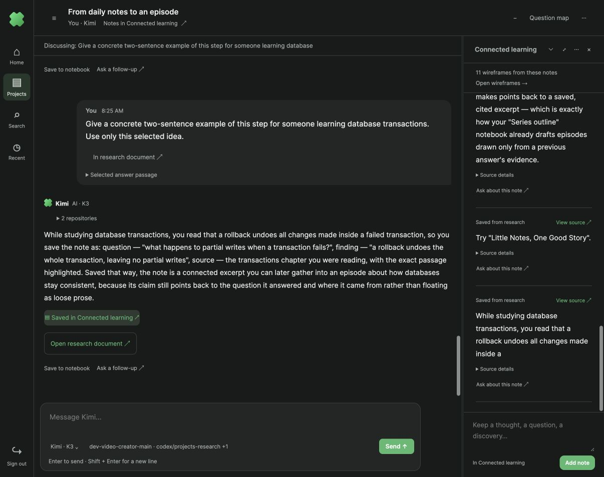
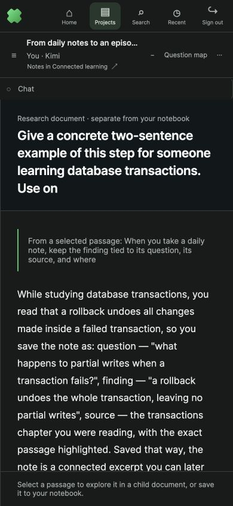

One chat, connected research documents
Visible-browser verification on parallel stack 4291 using real Kimi K3 generation, 18 October 2026.

1 · Persistent conversation on the left; research document in the primary area. Selecting a prior document in the map changes the document context without replacing the chat history. Repository and agent settings remain attached to the chat.
2 · Selection → child document → minimized chat. A passage selected from the first generated child produced a second child, opened here. The map contains the root and two descendants. An intervening ordinary follow-up remained in chat and did not add a node.
3 · Notebook capture is deliberate and separate. A 95-character excerpt from the generated document was saved to Connected learning with source lineage. Research documents were not automatically added to notebooks. The notebook retains its wireframe entry point.
4 · Mobile document focus. Chat collapses to a compact restore control above the document; restoring it shows the same conversation and composer.Real generated child: f39c8d47-d1f3-48e1-81d0-61e35a45196e. Ordinary reply: 054382f8-505f-4758-bea0-c214edbdd02e. Recursive child: 667b294a-4d51-4097-83ce-d47b240a8c82. All belong to chat 8b4934cd-d19b-49c9-ae48-cba07b4bd841.
These are generated research artifacts, not manually editable notebook documents. Docker-backed storage verification remains blocked by Docker disk exhaustion. Screenshots are unmodified; captions provide annotations.